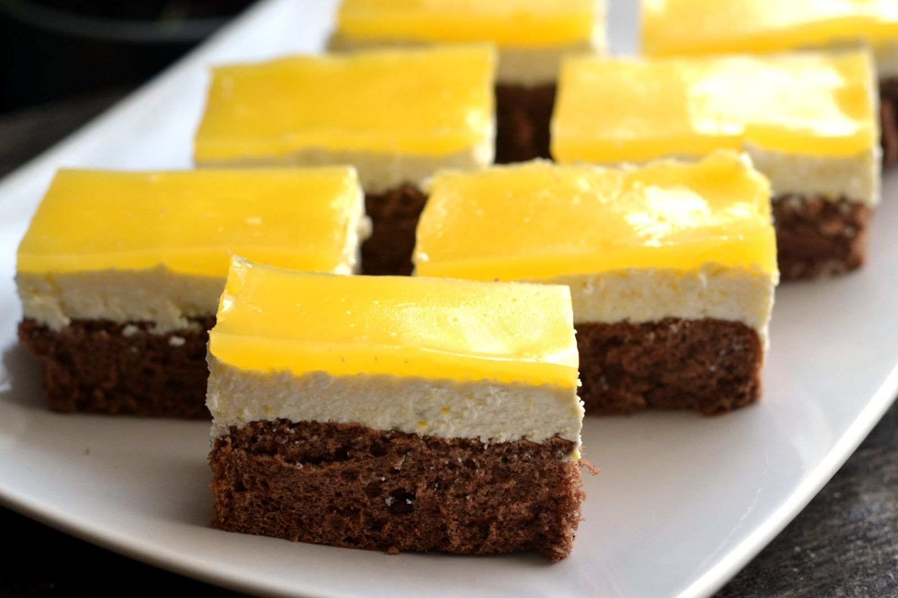

Fantás süti
A kiadós Fanta-szelet az egyik legnépszerűbb túrós édesség, ami kiállta az idők próbáját. Sőt, sokan minden ünnepi alkalomra elkészítik. A puha, kakaós tésztát gyorsan összedobod, és egyáltalán nem kényes. A túrós tölteléket kevés tejszínnel vagy mascarponéval még krémesebbé, lágyabbá teheted. A tetejére kerülő pudingos keverékbe bármilyen szénsavas üdítőt rakhatsz.

Hozzávalók
- 7 db tojás
- 2 ek cukrozatlan kakaópor
- 5 evőkanál finomliszt
- 7 ek cukor
- 1 dl napraforgó olaj
- 1 csomag sütőpor
- 50 dkg tehéntúró
- 20 dkg porcukor
- 1 csomag vaníliás cukor
- 25 dkg margarin
- 7 dl szénsavas narancsos üdítőital
- 2 csomag vaníliás pudingpor
Elkészítés
- A tojások fehérjét csipet sóval kemény habbá verjük.
- Egy másik tálban a sárgáját kikeverjük a cukorral, hozzáadjuk a lisztet, sütőport, olajat, kakaót és végül könnyedén belekeverjük a felvert habot.
- Kizsírozott és lisztezett tepsiben, előmelegített sütőben tűpróbáig sütjük. Majd hagyjuk teljesen kihűlni.
- A margarint habosra keverjük a porcukorral, vaníliáscukorral, majd hozzáadjuk az összetört túrót.
- Ezt a túrós krémet a megsült és kihűlt tészta tetejére kenjük.
- 2 csomag vaníliás pudingport megfőzünk 7 dl Fantában, hagyjuk kihűlni, néha megkeverjük.
- Mikor kihűlt, a túrókrém tetejére kenjük és néhány órára betesszük a hűtőbe.
- Amikor kellőképpen lehűlt, felvágjuk.